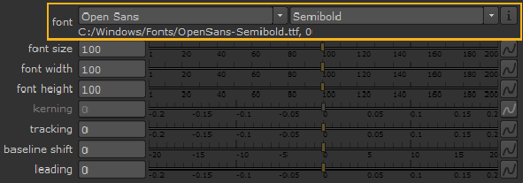
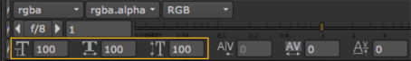
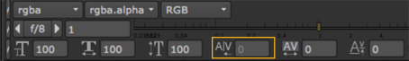
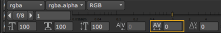
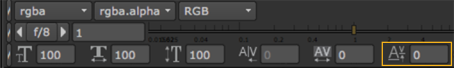

文本节点使用的 FreeType 库支持大量字体，包括 TrueType 、 OpenType 和 PostScript 字体。为了更快地显示可用的字体 字体 下拉菜单中，当您打开文本节点的 “属性” 面板时，这些字体将作为 XML 文件缓存。字体缓存 XML 文件被调用 Fontmapping.fcache 它的位置由环境变量 NUKE_TEMP_DIR 指定。请参阅 更新字体缓存 欲了解更多信息。
注意: 请参阅 环境变量 有关设置环境变量的更多信息。
注意: 渲染时不使用字体缓存文件，渲染场中也不需要字体缓存文件。
核武器 在缓存字体之前，按照设定的顺序从不同位置检索文本节点中的可用字体:
| 1。 | 中指定的位置 项目设置 > 字体 > 项目字体路径 控制。 |
| 2. | 的 。核武器/字体 目录和所有其他插件文件夹。 |
| 3. | NUKE_FONT_PATH 环境变量指定的位置。 |
注意: 位置 1 和 3 允许您使用操作系统标准语法指定多个路径。例如，在 Windows 上，您可以指定 “c: \ windows \ font1; c: \ windows \ font2;."
| 4. | 本地字体文件夹。 |
| 5. | 系统字体文件夹，假设 项目设置 > 字体 > 包括系统字体 已启用。例如，在 Windows C: \ Windows \ Fonts \ 上。 |
注意: 如果几个位置包含相同的字体, 核武器 使用它在第一个目录中找到的字体。
一般来说，不能保证字体系列和样式，如 {Arial: Regular}，将呈现相同的跨平台。为了避免这种情况, 核武器 附带所有平台通用的几种字体。如果你禁用 项目设置 > 字体 > 包括系统字体 ,只有随附的字体 核武器 在字体控件中可用。
请参阅 第三方库和字体 有关随附的字体列表 核武器 .
注意: 只有物理存储在文件中的字体在 字体 控制。因此，中可用的系统字体列表 核武器 可能不同于同一台机器上的其他软件应用程序。
| 1。 | 突出显示要在中影响的文本 消息 字段或查看器。 |
| 2. | 在 “文本属性” 面板中，单击 字体 家庭 下拉菜单选择所需的族。 |
| 3. | 选择所需的 字体样式 从下拉列表中。 |
注意: 可用的样式取决于选定的族。
| 4. | 单击信息图标以显示所选字体的位置。例如: |

使用的字体系列和样式保存在 核武器 脚本以及一些额外的信息，以确保在不同的机器或操作系统上打开脚本时使用相同的系列和样式。如果字体系列和样式不相同, 核武器 显示警告消息。
| 1. | Highlight the text you want to affect in the message field or Viewer. |
| 2. | 要调整字体的整体大小，请使用 字体 尺寸 滑块。当 领先 设置为 0 时，此参数还控制每行文本之间的间距。 |
渲染字体时, 字体大小 控制使用的字体提示。字体提示调整插入的像素以更清楚地呈现字体。在小尺寸和低分辨率输出设备上，它对字体的易读性有很大影响。为了获得最佳结果，您应该使用 字体 尺寸 参数 (而不是 规模 上的控制 集团 选项卡) 来控制字体的大小并保持 规模 设置为 1。
提示: 使用 全局字体比例 控件来调整当前文本节点中所有字符的缩放乘数，而不考虑 字体大小 为单个字符指定。
| 3. | 您可以调整字体非对称的 字体宽度 和 字体高度 控制。 |
您还可以使用查看器上方的控件来调整字体大小。

| 4. | 要增加或减少单个字符之间的间距，请调整 字距调整 滑块。通过使用负值，可以使字母重叠。 |
注意: 如果选择多个字符或组中的最后一个字符，则 字距调整 控件已禁用。
您还可以使用查看器上方的控件来调整字距调整。

| 5. | 要增加或减少每个字符和前一个字符之间的空间，请调整 跟踪 控制。负值将字符移动到前面的字符。 |
您还可以使用查看器上方的控件来调整跟踪。

| 6. | 要调整选定文本在基线上方的高度，请在屏幕空间中使用 基线偏移 控制。基线是大多数字母赖以存在的假想线。此控件允许您可靠地排列不同字体的基线。 |
您还可以使用查看器上方的控件来调整基线。

| 7. | 如果文本覆盖包含几行文本，则可以使用 领先 滑块。通过使用负值，可以使字母重叠。 |
注意: 不同于 基线偏移 控制, 领先 影响边界框内的所有文本，而不考虑选择。
对齐控件影响文本在 x 轴和 y 轴上的边界框内的定位。
| 1。 | 使用 Xjust 下拉菜单控制您希望如何水平对齐文本: |
• 左 -将文本沿屏幕文本框的左边缘对齐。这使得文本的右边缘变得粗糙。
• 中心 -从屏幕文本框的中心对齐文本。这使得文本的两个边缘变得粗糙。

• 右 -将文本沿屏幕文本框的右边缘对齐。这使得文本的左边缘变得粗糙。

• 证明 -沿屏幕文本框的左侧和右侧边缘对齐文本。这没有留下粗糙的边缘。理由是通过扩大字母之间的空格来完成的。如果没有空格，或者空格比它们宽三倍多，字母就会被扩大。

| 2. | 使用 Yjust 下拉菜单控制您希望如何垂直对齐文本: |
• 顶部 -将文本与屏幕文本框的上边缘对齐。

• 中心 -从屏幕文本框的中心对齐文本。

• 底部 -将文本与屏幕文本框的底部边缘对齐。

|
|